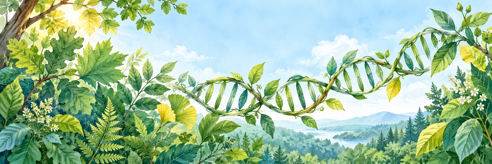

CONNECT · COLLABORATE · DISCOVERCONS302
CONS302
Presentation Group Draw
Different perspectives.
Shared discoveries.
Prepare the class draw →Your presentation teams are ready.

From genes to ecosystems.Open Teacher setup to prepare a draw on this computer.
Room for every perspective
Up to 8 presentation groups, with no more than 6 students each.